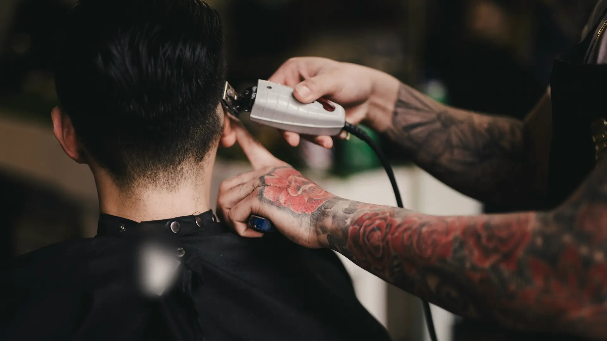
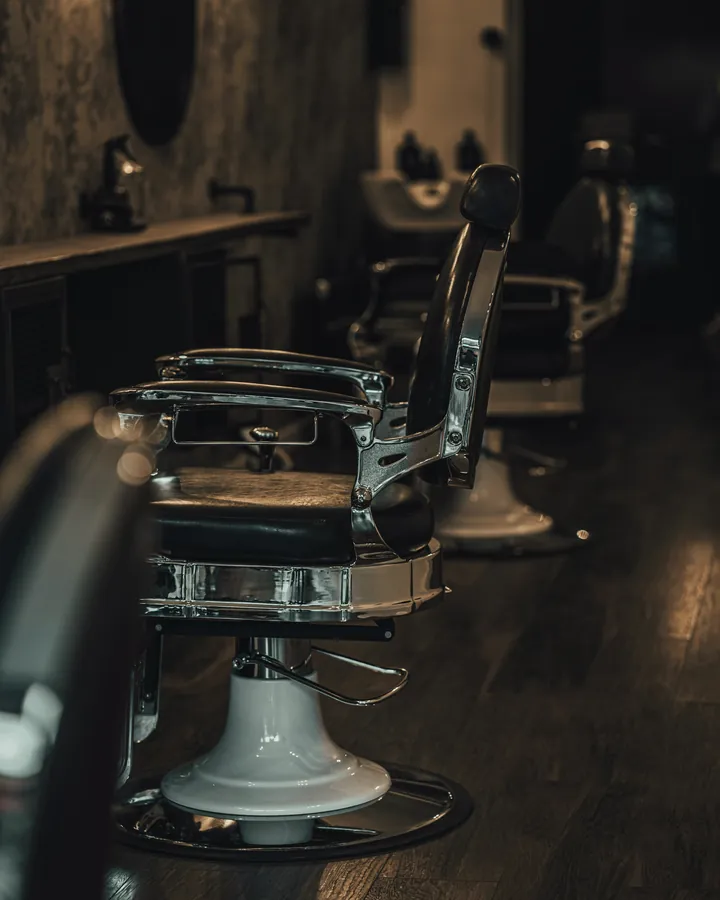
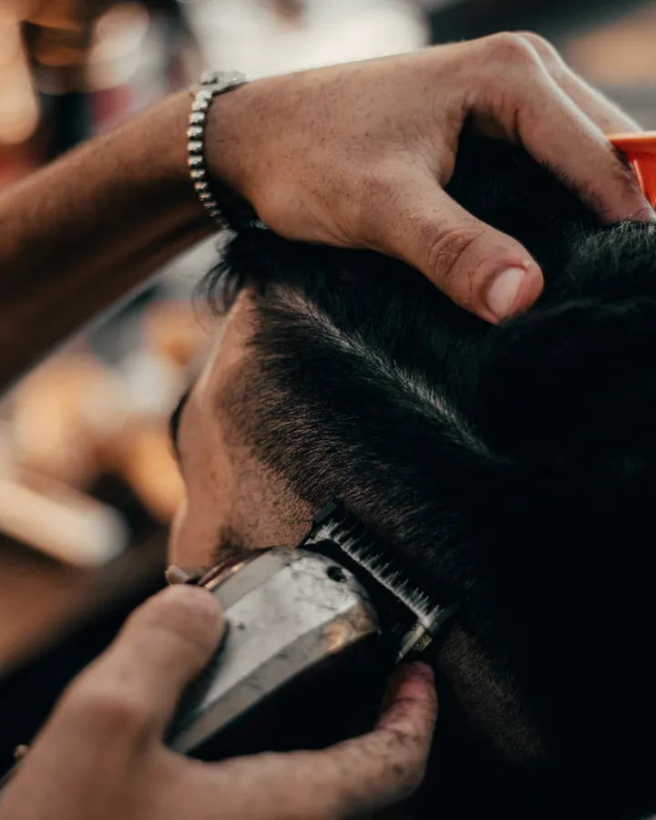
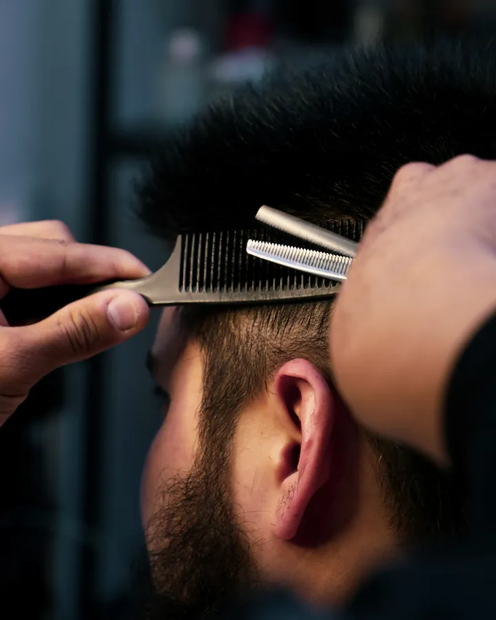
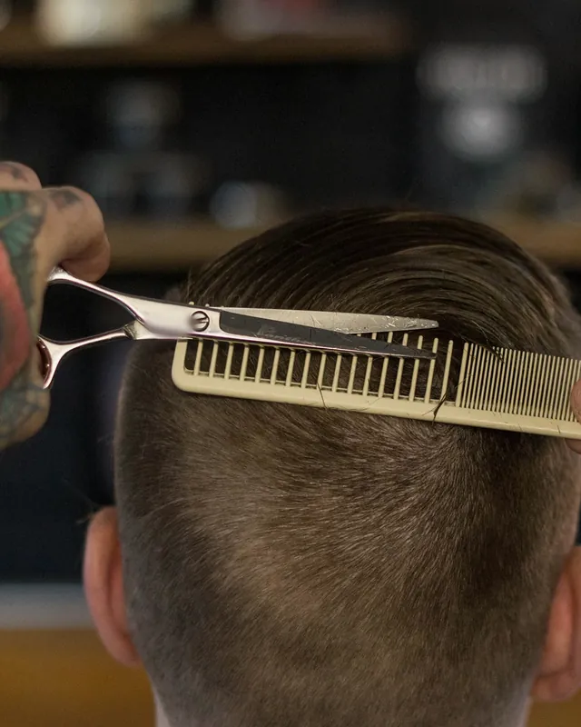
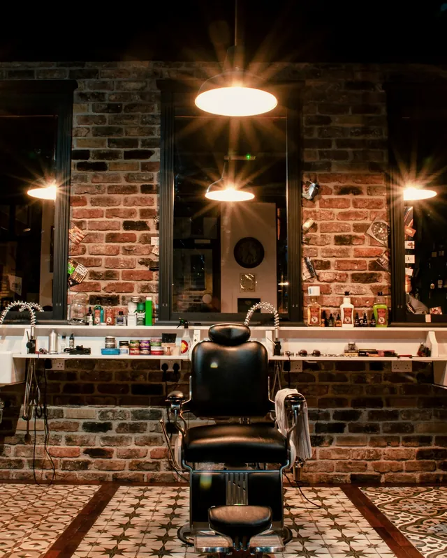
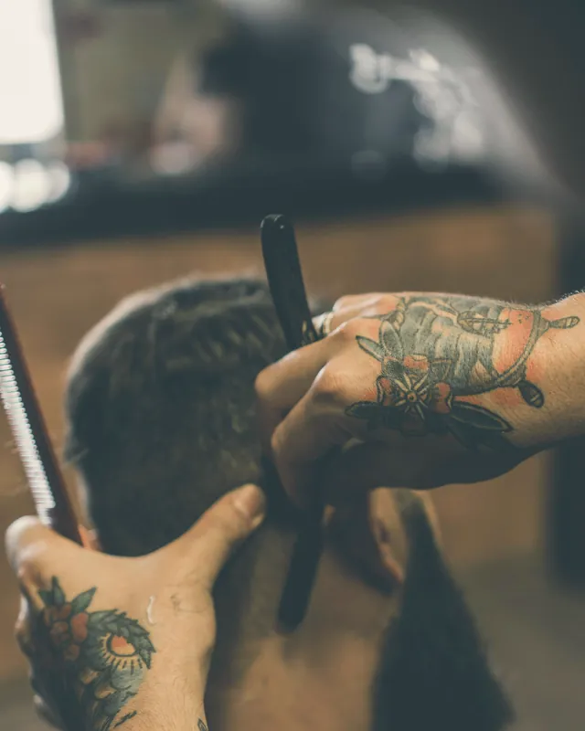
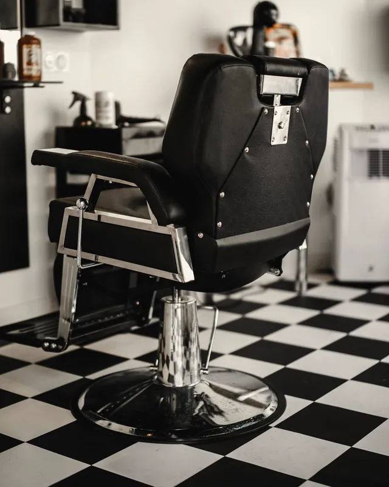
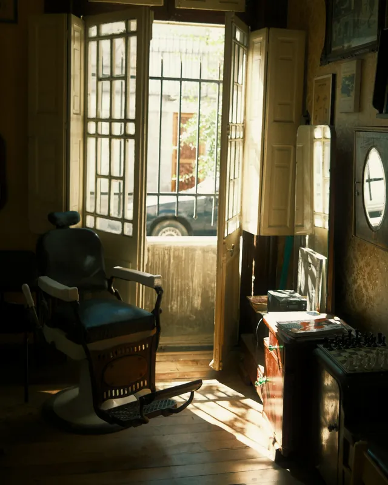

Barbería · Centro · Donostia
Corte limpio, sin prisa
Degradados, navaja y barba con toalla caliente. Te vas como querías, a la primera.
Martes a sábado · mejor con cita
- Corte18 €
- Barba12 €
- Corte y barba26 €
Precios
Lo que pides, lo que pagas
Corte
- CorteTijera o máquina, lavado y peinado18 €
- DegradadoSkin fade o low fade, con navaja en la nuca20 €
- RapadoA una sola altura12 €
- Corte infantilHasta 12 años12 €
Barba
- Arreglo de barbaPerfilado con navaja12 €
- Afeitado clásicoToalla caliente, espuma y navaja18 €
- Corte y barbaEl combinado de siempre26 €
Extras
- CejasCon navaja o pinza5 €
- Lavado y masajeDiez minutos que se agradecen6 €
- Tinte de barbaNatural, para tapar canas10 €
- Diseño con máquinaLíneas y dibujosdesde 5 €
Precios de ejemplo: en tu web, los tuyos, con lo que dura cada servicio.
Barberos
Elige quién te corta
Cada uno tiene su mano. Si ya tienes barbero, pídelo; si no, te damos el primer hueco libre.
- Degradados
Iker
Fades limpios y diseños con máquina. Trae foto y lo clava.
Martes a sábado - Navaja y barba
Unai
Afeitado clásico con toalla caliente y perfilado a mano alzada.
Martes a viernes - Clásicos y niños
Ane
Tijera, raya al lado y paciencia infinita con los peques.
Miércoles a sábado
La casa
Navaja, tijera y conversación
Tres sillones, buena música y nada de prisas. Te preguntamos qué quieres antes de coger la máquina, y si dudas, te enseñamos cómo quedaría. Aquí vienes a salir como querías, no a hacer cola.
- Sin cita: martes y miércoles por la mañana
- Toalla caliente incluida
- Pago con tarjeta o Bizum


Cita
Elige hora y listo
Dinos qué te quieres hacer y con quién, y te damos hora. Sin llamadas ni esperas al teléfono.
Elige servicio y barberoO deja que te asignemos el primer hueco.
Dinos día y horaPor WhatsApp; te contestamos enseguida.
Ven a tu horaSi se te complica, avisa y la cambiamos.

El oficio
Mano firme, pulso fino





Fotos de Unsplash
Horario
Cuándo venir
Martes a sábado · mejor con cita
| Lunes | Cerrado |
|---|---|
| Martes | 10:00–14:00 · 16:00–20:00 |
| Miércoles | 10:00–14:00 · 16:00–20:00 |
| Jueves | 10:00–14:00 · 16:00–20:00 |
| Viernes | 10:00–14:00 · 16:00–20:00 |
| Sábado | 9:00–14:00 |
| Domingo | Cerrado |
Cómo llegar
En el Centro, calle San Martín
Calle San Martín 2820005 Donostia / San Sebastián
Al cargar el mapa, tu navegador se conecta con Google.
Texto de ejemplo: en tu web, cómo llegar a pie, en autobús o en coche desde tu barrio.